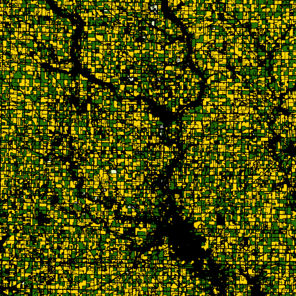

With the proliferation of satellites for remote sensing, myriad use-cases have emerged for applying computer vision for sustainability goals of monitoring forests, flood plains, mines, and farms.

Context
Space technology has ostensibly moved from being accessible only to large governments to being disrupted by startups. The cost of placing a cube-sat on orbit is estimated to be less that INR 1.5 crores today; which is about 1000x drop in 10 years. The immediate consequence of this has been democratised access to cheap-to-free satellite imagery. For instance, a 185 x 185 sq km image from Landsat (a family of US satellites) cost about USD 1,500—2,000 in the early 80s. After the US announced its Landsat Free and Open Data Policy in 2008, most Landsat products since 1972 are available for free. The EU has similarly provided free access to the data from the Sentinel family of satellites. In India, ISRO has made available parts of the Resourcesat-2/2A data free for download from the Bhuvan website. It is clear that data is no more the barrier anymore to remote sensing applications. This trend will robustly continue as several private companies are planning to launch satellite constellations. This will mean that satellite imagery would get better along three dimensions: time and space resolutions and the number of frequency bands available.
| From data, the focus is ostensibly now on intelligence. Given the easy access to data, the search is on for value-add applications in domains such as agriculture, oil and gas, construction, transportation, and defence. Indeed, the last five years has seen innovation by several newly founded software-like startups in this space. A good summary of the commercial interest is provided by this table from Crunchbase and CBInsights. (The table is titled EO + ML to refer to combination of Earth Observation and Machine Learning.) In India, perhaps the biggest name in this domain is that of SatSure which began looking into the agriculture farm insurance vertical and has later diversified into other areas. |

|
Role of Machine Learning
Given access to a large database of satellite imagery, variety of problems emerge which fit into standard machine learning formulations. First, is the task of object detection: Drawing bounding boxes around identified objects in the image. Examples of these include detecting ships, cars, trains, buildings, mines, etc. Standard convolutional neural networks (CNNs) can be employed, but the primarily challenges are the large scale of satellite images and the often very small sizes and variable aspect ratios of the objects. These challenges are well illustrated in this image for detecting ships from the paper titled “You Look Only Twice”. Apart from dealing with spatial dimensions, satellite images have multiple frequency bands and thus provide interesting choices on feature selection for processing with CNNs.
The second set of tasks is of change detection , where the goal is to identify regions which have changed when contrasting two satellite images. This has applications in determining extent of damage during natural disasters, understanding the growth of cities, and also determining deforestation. This is well illustrated with the following image from the recent paper titled “From Satellite Imagery to Disaster Insights”. The researchers compute a pixelwise change and from it a disaster impact index. They successfully apply their methods for recent hurricane and fire incidents in the US. Such analysis at scale and help efficient planning of humanitarian aid and infrastructure re-development.

|
Combining computer vision techniques for object and change detection with other sources of data can lead to variety of interesting end use-cases. A celebrated result is the accuracy of predicting corn yield by Descartes Labs. The image on the right taken from their official blog, shows the result of their object detection where they are able to use both object (across space) and change detection (across time) to segment the image into individual soy (green) and corn (yellow) farms. They combine this information with weather information to predict corn output and have managed to be within 1% of official yield figures. |
 |
Apart from object and change detection, deep learning also finds utility in pre-processing of satellite imagery. This includes both sharpening and alignment or registration. Also, there is the traditional problem of classifying land use, which can be formulated either as pixel wise segmentation or scene recognition. All these tasks are supervised in nature and require training data with manual labels. Augmentation plays a very dominant role here since inferences on satellite imagery is expected to be invariant to scale and rotation. In summary, processing satellite imagery involves a select few, but standard, tasks in computer vision. Dealing with volume, scale, and multiple input channels are the primary challenges.
Open source tools
The characteristic aspect of the Machine Learning growth in the last decade has been democratisation of the methods with an open-source-first policy. In the case of satellite imagery too, several interesting projects provide open-source tools. One of the most promising examples is the raster-vision repository by Azavea. They also provide a very useful labelling and visualisation tool Geotrellis.
In terms of datasets, there are still no dominantly used benchmarks. As research in the field evolves, we expect this to change. There have been a couple of recent contests (with datasets) such as DeepGlobe, Earth vision, and monitoring rainforests.
Comment
The last decade has moved from expensive satellite data to cheap-to-free data. We expect the next phase to move from complicated models for processing the images to democratised machine learning models for the few common tasks discussed above. This a key innovation piece that AI4Bharat wants to contribute to. We would like to make open-source tools available to ingest, process, and then apply machine learning to satellite imagery. We hope to achieve this in collaboration with governtment agencies such as the National Remote Sensing Center.
Once such ML models are democratised, further innovation would focus on building specific solutions for different challenges. Monitoring quality of water bodies including the Ganga, detecting illegal mining practices, and correlating government schemes with building of rural infrastructure are all substantially relevant in the social context. In addition, variety of commercial applications like advisory for farm insurance, tracking of shipments, and planning real-estate expansions would continue to scale up, and will be well served by existing and upcoming startups in the space.
Acknowledgements

Author |
Pratyush Kumar
|